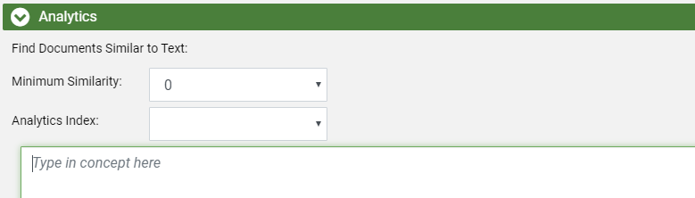
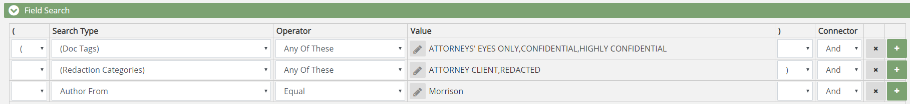
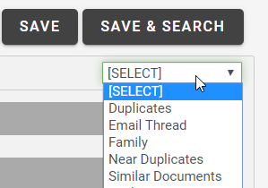

In
On the Advanced Search tab, under Search Criteria, areas can be expanded as required to define the search and/or search options. For more information on these areas, see Work with Advanced Search. The Advanced Search tab with the Field Search area expanded and the other areas collapsed is shown as follows:
To construct and run, save, or save and run an advanced search:
Open the case you want to search. The dashboard appears.
In the dashboard, go to Need to construct an Advanced Search? in the upper right corner and click Advanced Search. The Advanced Search case view appears.
If a previously defined search is already displayed on the dashboard, click Clear at the top of the Advanced Search case view. The title for the search changes to Untitled.
Begin building the advanced search by expanding any of the needed sections on the Advanced Search page and creating your search criteria. The steps below describe criteria you can add to modify the scope of your search. Note that adding criteria does not automatically run the search. When ready to run the search, click the Search button in the top-right corner of the screen.
|
|
Note: The steps below are optional methods for modifying the scope of your search. You can complete one or all, depending on how focused you would like the search to be. The steps are listed in one common workflow scenario. However, you can complete them in whatever order you like. |
Select date criteria for the search by means of the Timeline:
Expand the Timeline area on the Advanced Search page by clicking the  icon.
icon.
Choose the date field you would like to use when running the Timeline search.
Select the range of dates you would like to limit the scope of the search to. You can input these dates manually by typing them into the Filter Dates fields, or select them by clicking and opening the calenders beside the fields. The first field is the start date and the second field is the end date. Additionally, you can select a date range of interest by clicking on the Timeline itself and dragging right or left as required to define the range of interest. For more information on selecting a date range, see Work with Advanced Search.
Optional: Select the Include Empty/Invalid Dates option to include into the document set documents that contain date problems. This option affects only the documents listed in the case table; it does not affect the Timeline.
Continue defining the search by selecting additional criteria, or run the search by clicking the Search button in the top-right corner of the screen.
Run a search for conceptually similar documents by means of the Analytics area of the Advanced Search page.
Expand the Analytics area on the Advanced Search page by clicking the icon.

Complete the Analytics section of the Advanced Search page as described in the following table.
|
component |
Description |
|
Minimum Similarity |
Select a relevancy threshold to be used for the search. The threshold expands or narrows the evaluation for conceptually matching documents. Note:
|
|
Analytics Index |
Select the search index that has been defined for the concept of interest. Your administrator must configure concept search indexes. Contact your administrator for details about your concept search indexes. |
|
Concept |
Enter your query into the Concept field. The query can be any size, but a more fully described concept will usually yield better results than just one or two terms. |
Continue defining the search by selecting additional criteria, or run the search by clicking the Search button in the top-right corner of the screen.
To define a text search, complete the following steps. The following figure shows a typical text search.

.As required, select one or more search options from the Search Features list, as described in the following table.
Note:
These options apply to all entries in the Keyword field.
Applying any of these options to multiple terms can slow the search.
Select from one or more special types of search as follows.
|
Component |
Description |
|
Stemming |
Search for terms and all words beginning with the root form of the word entered. For example, searching for operation with this option selected will return documents containing operation, operate, and operator. (The root form of operation is considered operat.) |
|
Phonic |
Search for terms that sound similar but are spelled differently. For example, searching for smith with this option selected will return documents containing smith, smithe, and smythe. |
|
Fuzzy |
Search for terms that are not quite an exact match but are close. Useful for searching text fields in which some characters may not have been interpreted correctly by an OCR engine. Select a number from 0 to 9 to specify the degree of fuzziness that will be accepted. Values from 1 to 3 represent moderate levels of error tolerance and are used most often. Higher numbers result in a higher error tolerance (more results). Fuzzy search results may vary, depending on such factors as the length of the search term and/or position of incorrect characters. |
|
Synonyms |
Search term(s) that have the same meaning as the word that you enter, such as the words legal and authorized. Synonyms are defined by the WordNet® concept network. For details on WordNet, see http://wordnet.princeton.edu/. |
|
Related Words |
Search for the term you enter and related terms as defined by the WordNet concept network. For example, words may be related by being a subset of the search term (such as furniture and chair). WordNet considers many types of relationships, as discussed on their Web site. |
Enter any full-text search term or phrase in
the Keyword field. Use
the syntax explained in

Continue defining the advanced search by selecting additional criteria. Save and/or run the search by clicking either the Search, Save, or Save and Search button in the top-right corner of the screen.
To define field-specific criteria for the search, complete the following steps. The figure below shows a simple field-specific search combined with a redaction search.

to expand the section.Construct the first statement for your
search by selecting a search type, choosing or inputting values associated with the search type, and selecting the needed operator. For more information about this step, see
To include another search statement in this
area, select the required connector (And,
Or, Not)
on the right side of the statement, then click  . Define this search statement using the same process described above. Repeat this step for any additional search statements that need to be added.
. Define this search statement using the same process described above. Repeat this step for any additional search statements that need to be added.
|
|
Note: If two or more statements should be grouped into an expression, you need to use parentheses. |
After the field and/or special search is defined, complete your advanced search definition as needed. When finished, save and/or run the search by clicking either the Search, Save, or Save and Search button in the top-right corner of the screen.
If needed, specify the sort order for the advanced search. Up to three fields can be defined for sorting. When you sort based on multiple fields, the order of the sorting is based on the order in which the fields are selected. To specify sort order:
.Click  Add sort by field.
Add sort by field.
Select the first field to be sorted. This is the primary order for the search results.
Select the sort order—Ascending (lowest to highest) or Descending (highest to lowest).
To specify a second or third sort order, click Add sort by field. Repeat the previous steps for the second and/or third field.
In the following example, search results will be sorted first by author name and then by date created.

Continue defining the advanced search by selecting additional criteria. Save and/or run the search by clicking either the Search, Save, or Save and Search button in the top-right corner of the screen.
To add random sampling, complete the following steps. When Random Sampling is used the search returns a random sample of documents instead of all documents meeting your search criteria. An overview of random sampling can be found in Overview: Advanced Search.
|
|
Note: If using random sampling, do not include any of the relationship selections in the [SELECT] drop-down menu. |
If the Random
Sampling section is not visible on the Advanced
Search page, click the corresponding arrow,
On the drop-down menus, select the required sampling type and associated options as described in the following table.
|
Sampling Type |
Description |
|
Sampling Type |
Statistical Sampling - based on standard statistics calculations that use a confidence level and margin of error. Fixed Size - creates a sample containing a specific number of documents in the search results. When this option is selected, enter the desired size (a value equal to or greater than 1) in the Fixed Size field. The value you choose should be based on the size of the search results without random sampling applied and how many of those documents represent a good sampling size. |
|
Confidence Level |
Confidence level represents the reliability of an estimate, that is, how likely it is that the sample returned will be representative of all search results. The larger the confidence level is, the narrower the range of documents will be that are considered to be representative.
|
|
Margin of Error |
The margin of error expresses the amount of error to be allowed in the search results sample. Select a value from 1 - 5, where 1 is the least amount of error and 5 is the highest amount of error. A setting of 1 typically returns the most documents; a setting of 5 typically returns the fewest documents. |
Continue defining the advanced search by selecting additional criteria. Save and/or run the search by clicking either the Search, Save, or Save and Search button in the top-right corner of the screen.
To include documents related to the search results, you can choose a relationship type from the [SELECT] drop-down menu. Options include:

To learn more about each relationship type, see Overview: Relationships.
|
|
Note: This option should not be selected when random sampling is used. |
Continue defining the advanced search by selecting additional criteria. Save and/or run the search by clicking either the Search, Save, or Save and Search button in the top-right corner of the screen.